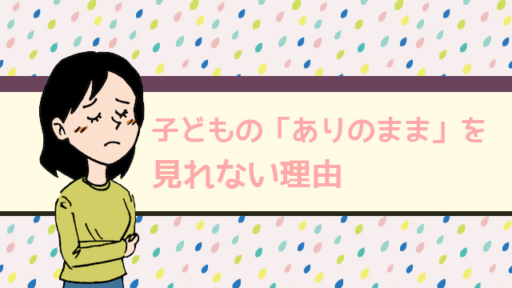

これまでも書いていますが、親は子どもの「現状」をいったん受け入れることが大切です。
というのも、私の経験上あまりに多くの親が子どもの現状をマイナスと捉え、そのマイナス評価を基に注意し説教し、あるいは説得しようとしているからです。
親に限らず、多くの人はマイナスを修正すれば自動的にプラスになると思っていますが、マイナスにいくら働きかけてもそれ自体がプラスの結果を生むことはありません。
特に人間関係では、いきなり相手にマイナス評価を下したうえで良いアドバイスを送ったところで効果はないでしょう。
相手はこちらの評価に対する反発と抵抗で聞く耳を持てないでしょう。
親子関係も同じです。
家では子どもの「部分」しか見れない
しかし、多くの親が子どもが勉強もせずダラダラ寝ていたり、スマホやゲームに興じている「現状」を見ると、こんな調子じゃ困る、受験は大丈夫なのか…と心配になり、なかなか子どもの現状を受け入れる気になれないかも知れません。
ただ、ここで注意すべきは親は子どもの全体像を見ているわけではないという事実です。
子どもは家庭で過ごすとき、学校にいるとき、塾にいるとき、友人といるとき各々違う姿を見せています。
だから親も教師も、１人の子どもの断片しか見ていないということになります。
優れた教師は、子どもの各々の断片からトータルな全体像を把握しようと努めます。
部分ではなく全体として１人の子どもを理解しなければ適切な指導はできないからです。
ところが親はどうしても家での「現状」だけを見て判断してしまう。子どもは、家では緊張を解いていわば一番無防備な姿をさらしています。
当然学校や塾にいるときより家庭にいるときの方がマイナス評価を受けやすい。
私が現役講師だったころ、授業中も熱心で成績もそれなりに安定している子でさえ、親と面談すると大抵は「先生、ウチの子ダラダラ寝てばかりで勉強しないんですよ。大丈夫なんでしょうか」と心配顔で訴える方がほとんどでした。
どんなに「お子さんは人一倍ガンバってます」と言っても「でも先生～」と次から次と子どもの「家でのダメさ加減」を持ち出してくるのです。
まるで子どものマイナスを発見することが親としての義務であるかのように（笑）
親はフィルター越しに子どもを見ている
なぜ親は子どもをマイナスに評価してしまうかといえば、いま言ったように子どもの全体像を見ないで家での「ダラシなく過ごしている部分」だけを見ているからですが、もう一つの理由として親だからこそ「子どもの現状」を正確にとらえられないことがあげられます。
つまり親だからこそ我が子の正確な姿を見ることができないということです。
少しややこしい話になりますが、以下になるべく分かりやすく解説します。
親が我が子を見るとき、正確に見ていない。それはどういうことかというと、まず親が子どもの「現状」を見るときは常に「こうあって欲しい」「こうあるべき」という子どもに対する思い（理想）のフィルター越しに子どもを見ているということです。
どんな親でも「あるべき子ども像」のイメージを心の内に持っています。
その理想的イメージから見たら、当然子どもの現状は常に「不満足」なものになります。
たとえば「定期テストが近い。そろそろ机にかじりついて一生懸命勉強しなければならないはずだ」という「子どものあるべきイメージ」を親は持っているとします。
そのイメージというフィルター越しに子どもの「現状」を見ると、大抵子どもの姿は満足いくものではありません。
ここで問題なのは、親のそのイメージ（我が子はこうあるべき）像は、親自身の経験や失敗など多くの記憶や観念が絡み合い、一種の現実離れした理想として描かれているということです。
親は自覚していませんが子どもに対して無意識に高いハードルを設定してしまっているわけです。
当然子どもの現状はその「理想」から大幅に減点されてしまいます。その理想を100点とすると、子どもの「現状」は50点以下、なかにはマイナス点などの場合さえもある。
要するに親の下す評価は多くの場合減点法であり、その基準が親の無意識的理想である以上、子どもからすれば何をやってもマイナス評価しか与えられないことになります。
「受け入れる」とはありのままを見ること
親は別に理想を子どもに押し付けているつもりはないでしょう。それは分かります。
「ただ心配なだけだ」と言うでしょう。
しかし、ここまでお話したように親は常に我が子の現状をマイナス評価しがちであるという事実を認識しておくことは必要です。
そしてマイナスと認定してしまえば、我が子の「望ましくない現状」は改善されるどころか、ますます強固なものになってしまいます。
これを回避する方法こそが「我が子の現状を受け入れる」なのです。
以前の記事（親の価値判断は必要ない？ 子どもの現状を受け入れる）でも言いましたが「受け入れる」とは子どもに迎合することでも肯定することでもありません。肯定も否定もせず、その「事実」を事実としていったん受け入れる。
つまり中立（ニュートラル）な視点を確保するということです。
親は子どもの「ありのまま」を見れていません。
何らかのフィルターをかけて見ている。
ですから親は自らの視力を矯正する必要がある。
一番良い方法は子どもの現状を、良いとか悪いとか、このまま行くときっとこうなるだとか、価値判断しないこと。起こってもいない未来の失敗を想定して、子どもの「今」を否定しないことです。
もっと子どもを信頼し子どものありのままを見てあげること。
受け入れるとはそういうことです。
そして本当に受け入れたら、子どもの「現状」はすぐに変わります。何もしなくても…です。